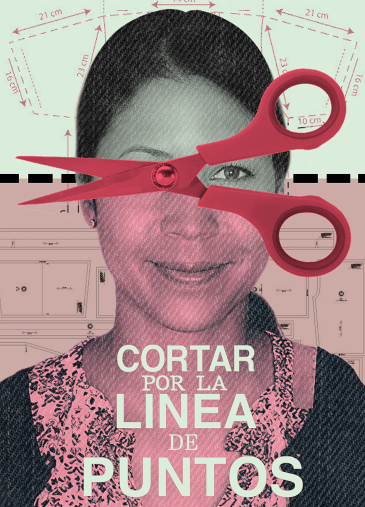
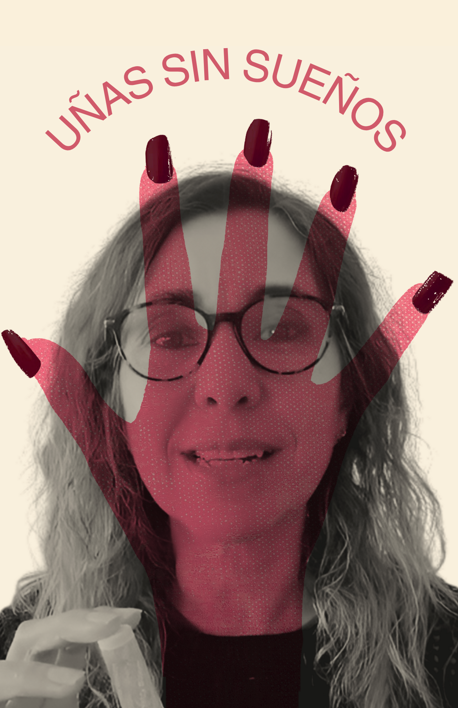
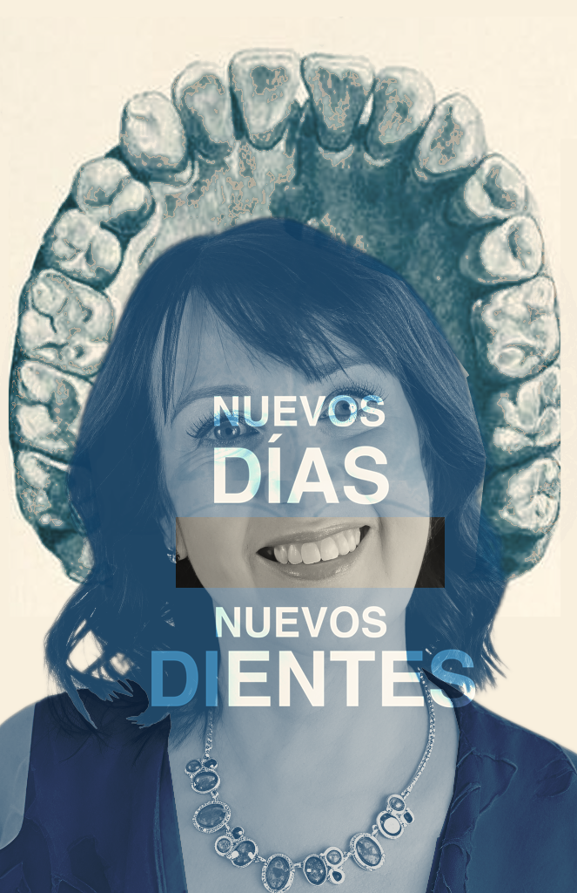

SB
Migración, Frontera y Diversidad Cultural
Reproduce el video para ver el pitch del proyecto.
Galería del Proyecto
Las seis piezas nacen de testimonios distintos y recuerdan que migrar no termina al llegar a un destino, es una experiencia que continúa marcando la vida, el cuerpo y la rutina. Con una metodología basada en referentes visuales y en la construcción retórica, estas narrativas independientes dialogan entre sí al colocarse juntas.




